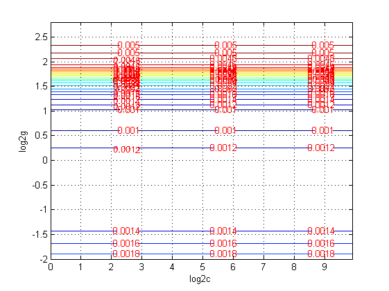
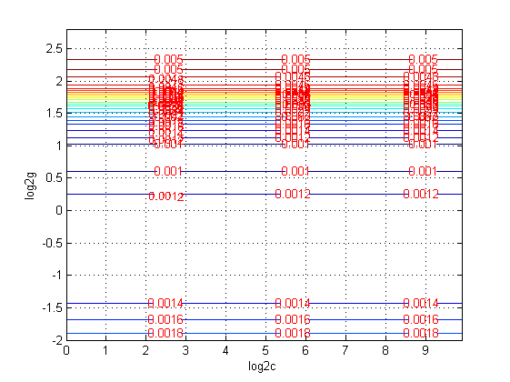

SVM神经网络的回归预测分析---上证指数开盘指数预测
| 该案例作者申明： |
| 1：本人长期驻扎在此板块里，对该案例提问，做到有问必答。本套书籍官方网站为：video.ourmatlab.com |
| 2：点此从当当预定本书：《Matlab神经网络30个案例分析》。 |
3：此案例有配套的教学视频，视频下载方式video.ourmatlab.com/vbuy.html。 |
| 4：此案例为原创案例，转载请注明出处（《Matlab神经网络30个案例分析》）。 |
| 5：若此案例碰巧与您的研究有关联，我们欢迎您提意见，要求等，我们考虑后可以加在案例里。 |
by liyang[faruto] @ faruto's Studio~ Email:faruto@163.com QQ:516667408 http://blog.sina.com.cn/faruto http://www.matlabsky.com http://www.mfun.la http://video.ourmatlab.com
Contents
清空环境变量
function chapter14
close all; clear; clc; format compact;
数据的提取和预处理
% 载入测试数据上证指数(1990.12.19-2009.08.19) % 数据是一个4579*6的double型的矩阵,每一行表示每一天的上证指数 % 6列分别表示当天上证指数的开盘指数,指数最高值,指数最低值,收盘指数,当日交易量,当日交易额. load chapter14_sh.mat; % 提取数据 [m,n] = size(sh); ts = sh(2:m,1); tsx = sh(1:m-1,:); % 画出原始上证指数的每日开盘数 figure; plot(ts,'LineWidth',2); title('上证指数的每日开盘数(1990.12.20-2009.08.19)','FontSize',12); grid on; % 数据预处理,将原始数据进行归一化 ts = ts'; tsx = tsx'; % mapminmax为matlab自带的映射函数 [TS,TSps] = mapminmax(ts); % 将映射函数的范围参数分别置为1和2 TSps.ymin = 1; TSps.ymax = 2; % 对ts进行归一化 [TS,TSps] = mapminmax(ts,TSps); % 画出原始上证指数的每日开盘数归一化后的图像 figure; plot(TS,'LineWidth',2); title('原始上证指数的每日开盘数归一化后的图像','FontSize',12); grid on; % 对TS进行转置,以符合libsvm工具箱的数据格式要求 TS = TS'; % mapminmax为matlab自带的映射函数 [TSX,TSXps] = mapminmax(tsx); % 将映射函数的范围参数分别置为1和2 TSXps.ymin = 1; TSXps.ymax = 2; % 对tsx进行归一化 [TSX,TSXps] = mapminmax(tsx,TSXps); % 对TSX进行转置,以符合libsvm工具箱的数据格式要求 TSX = TSX';


选择回归预测分析最佳的SVM参数c&g
% 首先进行粗略选择: % c 的变化范围是 2^(-5),2^(-4),...,2^(10) % g 的变化范围是 2^(-5),2^(-4),...,2^(5) [bestmse,bestc,bestg] = SVMcgForRegress(TS,TSX,-5,10,-5,5,3,1,1,0.0005); % 打印粗略选择结果 disp('打印粗略选择结果'); str = sprintf( 'Best Cross Validation MSE = %g Best c = %g Best g = %g',bestmse,bestc,bestg); disp(str); % 根据粗略选择的结果图再进行精细选择: % c 的变化范围是 2^(0),2^(0.3),...,2^(10) % g 的变化范围是 2^(-2),2^(-1.7),...,2^(3) [bestmse,bestc,bestg] = SVMcgForRegress(TS,TSX,0,10,-2,3,3,0.3,0.3,0.0002); % 打印精细选择结果 disp('打印精细选择结果'); str = sprintf( 'Best Cross Validation MSE = %g Best c = %g Best g = %g',bestmse,bestc,bestg); disp(str);
打印粗略选择结果 Best Cross Validation MSE = 0.000961388 Best c = 0.25 Best g = 2 打印精细选择结果 Best Cross Validation MSE = 0.000948821 Best c = 1 Best g = 1.6245
 
 利用回归预测分析最佳的参数进行SVM网络训练
cmd = ['-c ', num2str(bestc), ' -g ', num2str(bestg) , ' -s 3 -p 0.01']; model = svmtrain(TS,TSX,cmd); % model = svmtrain(TS,TSX,'-s 3 -c 1 -g 2 -p 0.01');
SVM网络回归预测
[predict,mse] = svmpredict(TS,TSX,model); predict = mapminmax('reverse',predict,TSps); % 打印回归结果 str = sprintf( '均方误差 MSE = %g 相关系数 R = %g%%',mse(2),mse(3)*100); disp(str);
Mean squared error = 1.95029e-005 (regression) Squared correlation coefficient = 0.999345 (regression) 均方误差 MSE = 1.95029e-005 相关系数 R = 99.9345%
结果分析
figure; hold on; plot(ts,'LineWidth',2); plot(predict,'r','LineWidth',2); legend('原始数据','回归预测数据'); hold off; grid on; snapnow; % web http://www.matlabsky.com/forum-31-1.html web http://www.matlabsky.com/forum-31-1.html -new;

子函数 SVMcgForRegress.m
function [mse,bestc,bestg] = SVMcgForRegress(train_label,train,cmin,cmax,gmin,gmax,v,cstep,gstep,msestep) % SVMcgForClass % 输入: % train_label:训练集标签.要求与libsvm工具箱中要求一致. % train:训练集.要求与libsvm工具箱中要求一致. % cmin:惩罚参数c的变化范围的最小值(取以2为底的对数后),即 c_min = 2^(cmin).默认为 -5 % cmax:惩罚参数c的变化范围的最大值(取以2为底的对数后),即 c_max = 2^(cmax).默认为 5 % gmin:参数g的变化范围的最小值(取以2为底的对数后),即 g_min = 2^(gmin).默认为 -5 % gmax:参数g的变化范围的最小值(取以2为底的对数后),即 g_min = 2^(gmax).默认为 5 % v:cross validation的参数,即给测试集分为几部分进行cross validation.默认为 3 % cstep:参数c步进的大小.默认为 1 % gstep:参数g步进的大小.默认为 1 % msestep:最后显示MSE图时的步进大小.默认为 20 % 输出: % bestacc:Cross Validation 过程中的最高分类准确率 % bestc:最佳的参数c % bestg:最佳的参数g % about the parameters of SVMcgForRegress if nargin < 10 msestep = 0.1; end if nargin < 7 msestep = 0.1; v = 3; cstep = 1; gstep = 1; end if nargin < 6 msestep = 0.1; v = 3; cstep = 1; gstep = 1; gmax = 5; end if nargin < 5 msestep = 0.1; v = 3; cstep = 1; gstep = 1; gmax = 5; gmin = -5; end if nargin < 4 msestep = 0.1; v = 3; cstep = 1; gstep = 1; gmax = 5; gmin = -5; cmax = 5; end if nargin < 3 msestep = 0.1; v = 3; cstep = 1; gstep = 1; gmax = 5; gmin = -5; cmax = 5; cmin = -5; end % X:c Y:g cg:mse [X,Y] = meshgrid(cmin:cstep:cmax,gmin:gstep:gmax); [m,n] = size(X); cg = zeros(m,n); % record accuracy with different c & g,and find the best mse with the smallest c bestc = 0; bestg = 0; mse = 10^10; basenum = 2; for i = 1:m for j = 1:n cmd = ['-v ',num2str(v),' -c ',num2str( basenum^X(i,j) ),' -g ',num2str( basenum^Y(i,j) ),' -s 3']; cg(i,j) = svmtrain(train_label, train, cmd); if cg(i,j) < mse mse = cg(i,j); bestc = basenum^X(i,j); bestg = basenum^Y(i,j); end if ( cg(i,j) == mse && bestc > basenum^X(i,j) ) mse = cg(i,j); bestc = basenum^X(i,j); bestg = basenum^Y(i,j); end end end % draw the accuracy with different c & g figure; [C,h] = contour(X,Y,cg,0:msestep:1); clabel(C,h,'FontSize',10,'Color','r'); xlabel('log2c','FontSize',10); ylabel('log2g','FontSize',10); grid on;
相关论坛： 《Matlab神经网络30个案例分析》官方网站：video.ourmatlab.com Matlab技术论坛：www.matlabsky.com Matlab函数百科：www.mfun.la Matlab中文论坛：www.ilovematlab.com |